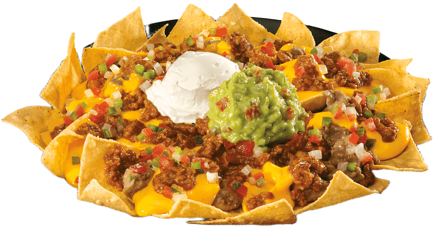

Tacos Classique — Viande juteuse, salade fraîche et fromage, servis avec notre sauce maison pour un goût authentique et réconfortant.
Tacos Classique — Viande juteuse, salade fraîche et fromage, servis avec notre sauce maison pour un goût authentique et réconfortant.

Enchiladas — Tortillas roulées, nappées d'une sauce riche et gratinées au four pour une explosion de saveurs.

Quesadillas — Tortilla croustillante garnie de fromage fondant et d'ingrédients au choix, simple et gourmand.

Burritos — Farce généreuse en riz, haricots et viande, enroulée pour un repas complet à emporter.

Chilaquiles — Plat traditionnel aux tortillas croustillantes, salsa piquante et œuf ou fromage selon votre choix.

Tortillas — Maison et fraîches : l'accompagnement parfait pour tous nos plats.
Nachos — Chips croustillantes, fromage fondu, pico de gallo et options pour partager.